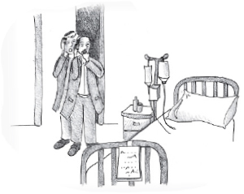

A Complete Matza for a Complete Recovery
The doctor’s grim face did not bode good tidings. He cleared his throat and said, “A tumor was found in your head and your condition is quite serious.”

The doctor continued, “The only thing I can recommend is surgery but … the chances of success are low.” The doctor stated the diagnosis and prognosis without withholding information.
Nosson did not despair. He went from doctor to doctor, but they all said the same thing. At the time that this story took place, over thirty years ago, medicine did not have much to combat this terrible disease. When Nosson saw that the doctors themselves were pessimistic, he also began to feel hopeless.
Nosson is not a Lubavitcher Chassid but in his youth he attended a Chabad yeshiva. When he finished yeshiva, his connection to Chabad also ended. Fortunately for him, his brother, who lives in Montreal, is close with the Chabad community. When his brother heard the news he knew what to do. “I will ask the Lubavitcher Rebbe for a bracha.”
Nosson did not pin his hopes on that, but did not stop his brother from doing so. His brother got the medical documents together and sent them to the Rebbe with one of the Chassidim, along with a letter with a request for a bracha.
The Rebbe’s response was: “Do the operation.”
His devoted brother spoke to Rabbi Twersky who had connections with the best doctors in the US. “Follow what the Rebbe told you and do the operation,” he advised.
R’ Twersky got personally involved and made efforts to find the best doctors for the operation. Before the surgery was performed, Nosson’s brother sent a letter to the Rebbe with an unusual request, that the Rebbe say chapters of T’hillim in his minyan on the day of the operation for the success of the operation and a refua shleima. The Rebbe’s response was: I will mention it at the gravesite [of the Previous Rebbe] on the day of the operation.
Nosson was very nervous about the operation. As the days passed and the time approached he grew more fearful. The night before the operation he lay in the hospital bed. The hospital was quiet except for the ticking of machines heard in the background. Nosson could not sleep as worrisome thoughts swirled through his mind.
“The chances of success are low …” he heard the doctors’ voices in his mind. He thought of people who had not successfully come out of surgery. His heart began to beat more strongly and he felt that he couldn’t breathe. No! He couldn’t have the operation!
Without thinking, he quickly detached himself from the machines, got out of bed, and began pacing the hospital corridors. His heart raced as he imagined that someone had noticed him and was chasing after him. But he continued walking quickly, opened the door of the department, and soon found himself outside the hospital.
A short time later he found himself at home where he collapsed on the couch in exhaustion. Then he breathed a sigh of relief. He knew he had done something irresponsible and irrational but he just didn’t have the courage to go through with the operation.
The next morning, when the doctors entered his room, they were shocked to find his bed empty. After some research they discovered what had happened. They were furious. They had done so much for him and this is what he did in return?!
A few days later, when Nosson had recovered from his fright, he called R’ Twersky. He first apologized for what he did and then asked R’ Twersky to reschedule the operation for right after Pesach.
Nosson’s brother decided that the best way to help his brother would be to bring him to the Rebbe. He tried to arrange an appointment for yechidus (a personal meeting), but at that busy time it was not possible. What they suggested to him was that he come Erev Pesach when the Rebbe gave out matzos and he should take some matza which is “food of healing.”
Nosson loved the idea and so, a few hours before Yom Tov, he and his brother stood on a long line waiting eagerly to meet the Rebbe. When it was their turn, the Rebbe stopped the line and asked R’ Groner to find a whole (i.e. an unbroken) matza. A whole matza was found and the Rebbe handed it to Nosson. Nosson was very excited as he felt infused with renewed strength.
The Rebbe said to Nosson, “This is ‘food of healing.’ Place it as Levi (i.e. as the middle matza in the ke’ara). Just as the matza is complete, so too, you should have a complete recovery.”
Nosson left 770 feeling like a new man. Now he felt ready to have the operation. He was sure that everything would be fine.
The night before the operation, he was lying in bed in the hospital. This time, he was relatively calm and he did not consider doing what he had done the time before.
The complicated operation took hours. When it was over, the doctors came out with a smile on their faces. The operation had been more successful than they had anticipated it would be. Not only that but Nosson quickly recovered and regained his strength.
“It’s a medical miracle,” said the doctors. “We did not think he could recover from such a serious illness.”
Nosson returned to normal life. He had two more children born to him in addition to the two he had before, which was miraculous too. After many years he decided it was time to see the Rebbe again.
One Sunday, he stood on line to receive a dollar from the Rebbe. When it was his turn, he stood rooted to his place, finding it hard to utter a word and hard to move on. The people in charge tried to urge him forward but the Rebbe motioned to them to let him be. The Rebbe looked at him warmly and it was apparent that the Rebbe recognized him.
The Rebbe took four additional dollars and gave them to him. Nosson was thrilled. It was obvious to him why it was four – one for each of his children. The Rebbe then said, “May you never again need to be on the receiving end of miracles and wonders that were done here for you.”
Beis Moshiach. "A Complete Matza for a Complete Recovery." Beis Moshiach, no. 968 (March 31, 2015).